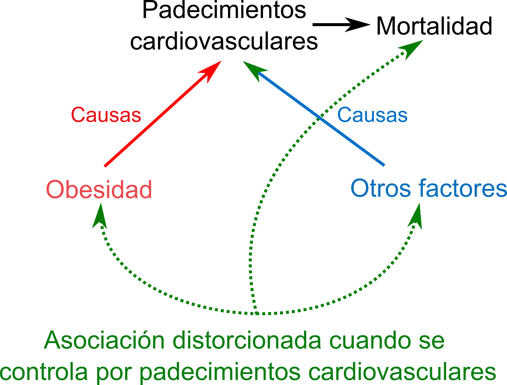
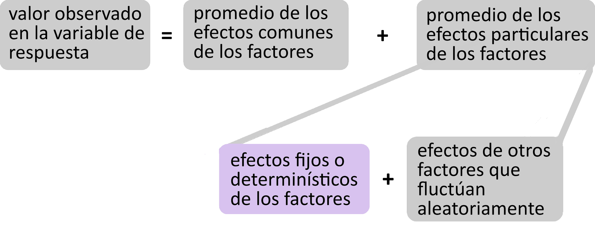

Modelo Estadístico Lineal
modelación y prueba de hipótesis
Al planear un estudio
¿Descriptivo o comparativo?
¿Cómo se miden las variables (escalas)?
¿Cómo se definen los tratamientos?
¿Cómo se asignan los tratamientos a las unidades de observación?
¿Procesos de confusión?
¿Se usó aleatorización en algún punto?
Procesos de confusión
- Hacen aparecer una asociación que no existe.
- Ocultan o enmascaran la existencia de una asociación

Sesgo por selección
- Cuando una variable explicativa y alguna otra variable actúan simultáneamente sobre la de respuesta.
- En este caso la variable de respuesta es un “colisionador”.
- Si no se maneja adecuadamente en el diseño del estudio o en el análisis, pueden producir resultados sesgados.

Clasificación y medición
La obtención de datos cuantitativos puede realizarse de muchas formas distintas, pero siempre se parte de alguna forma de clasificación.
Aunque clasificar puede parecer una tarea simple, muchas cosas dependen justamente de como se hace.
Medición cualitativa
El tipo más simple de medición es aquel en el que las categorías sólo se etiquetan.
Esta es la denominada escala de medición categórica o nominal .
A veces resulta útil expresar mediciones continuas en forma nominal.
El modelo estadístico lineal general{center}
Estructura general

Ejemplo de modelo lineal
Ganancia de peso en un grupo de orugas que declina conforme se incrementa el contenido de taninos en la dieta.
Esta condición puede describirse en forma abreviada así:
ganancia de peso de cada oruga | = | ganancia de peso base en general | + | efecto del contenido de taninos en la dieta | + | efecto de otros factores que fluctuan aleatoriamente |
Como modelo lineal se puede escribir así :
\[ y_{ij} = \beta_0 x_0j + \sum_{i=1}^{k}\beta_i x_{ij} + \varepsilon_{j(i)} \]
Interpretación de términos
- las X ’s proporcionan información sobre el nivel del individuo i en los factores que estamos considerando.
- Las β son incógnitas que debemos estimar (en eso consiste ajustar el modelo).
- La primera incógnita y la variable \(X_0\) que la acompaña, típicamente juegan el papel especial de reflejar el efecto de los factores constantes. Esto es, los factores que son comunes a todas las unidades experimentales. Para esto, usualmente \(X_0\) toma simplemente el valor de 1 para todas las unidades experimentales observadas.
Modelos con variables explicativas cualitativas
Un agrónomo planea estudiar las tasas de producción de cuatro híbridos de trigo en tres regiones geográficas representantes de diferentes condiciones de sequía. Los sitios se escogen según la cantidad de lluvia como normal climatológica y la respuesta es el rendimiento por hectárea. Las semillas de los híbridos son asignadas aleatoriamente a los sitios.
- ¿cómo piensas que se podría hacer esta aleatorización.
- ¿cual sería el modelo lineal que lo podría describir?
\[ y_{ijk} = \mu + R_i + H_j + RH_{ij} + \varepsilon_{k(ij)} \]
El modelo en todo su esplendor
\[ \begin{gather*} y_{ijk} = \mu + \beta_{1k}R_{1k} + \beta_{2k}R_{2k} + \beta_{3k}R_{3k} + \\ \beta_{4k}H_{1k} + \beta_{5k}H_{2k} + \beta_{6k}H_{3k} + \beta_{7k}H_{ik} + \\ \beta_{8k}RH_{1k} + \beta_{9k}RH_{2k} + \beta_{10k}RH_{3k} + \beta_{11k}RH_{ik}+ \\ \beta_{12k}RH_{1k} + \beta_{13k}RH_{2k} + \beta_{14k}RH_{3k} + \beta_{15k}RH_{ik}+\\ \beta_{16k}RH_{1k} + \beta_{17k}RH_{2k} + \beta_{18k}RH_{3k} + \beta_{19k}RH_{ik}+ \varepsilon_{k(ij)} \end{gather*} \]
¿Qué valores toman las X, las R y las H?
La forma más común de modelar datos cualitativos es:
- Mediante variables usualmente llamadas factores.
- Un factor es una listas de nombres o códigos de identificación de estados o niveles mutuamente excluyentes.
- En la modelación se requiere convertir el factor a variables indicadoras o dummy.
- Habrá tantas variables dummy como estados o niveles tenga el factor
- Cada variable se construye anotando la presencia/ausencia de la condición del factor.
\[ H_1 = \left\{ \begin{align*} \text{si } \color{red}{sí} \text{ es híbrido del tipo } a &: 1 \\ \text{si } \color{red}{no} \text{ es híbrido del tipo } a &: 0 \end{align*} \right\} \]
Dependencia lineal
- Ocurre cuando los valores de una variable pueden expresarse como combinaciones lineales (sumas o restas de múltiplos o submúltiplos) de las otras variables en el conjunto.
- A la dependencia lineal También se le denomina colinealidad o multicolinealidad.
¿a qué hace referencia este nombre?
…ejemplo de dependencia…
\[ y = \mu + \beta_1x_1 + \beta_2x_2 \]
μ | x1 | x2 |
|---|---|---|
1 | 1 | 1.5 |
1 | 2 | 2.0 |
1 | 3 | 2.5 |
1 | 4 | 3.0 |
- ¿Cuál es la dependencia lineal en esta tabla de datos?
\[ x_2 = 1 + 0.5 x_1 \]
Y… ¿qué tenemos aquí?
\[ y = \mu + \beta_1x_1 + \beta_2x_2 \]
μ | x1 | x2 |
|---|---|---|
1 | 0 | 1 |
1 | 1 | 0 |
1 | 0 | 1 |
1 | 1 | 0 |
- ¡La colinealidad impide resolver el ajuste de modelos!
- Para resolver este problema hay que reparametrizar.
- Una forma de reparametrizar: eliminar la primera variable dummy de un factor.
Otro caso
- ¿qué es esto?
- Un ecólogo desea probar los efectos relativos de 8 tratamientos (“Xs”) sobre la sobrevivencia de plántulas de Phaseolus vulgaris. Supongamos que se cuenta con 64 plántulas relativamente homogéneas.
- ¿qué solución de diseño experimental proponen?
- ¿Modelo que proponen para describir este proceso ecológico?
…que tal si….
\(\ldots\)se enteran que las 64 plántulas provienen en lotes de 8 de distintas cámaras y sustratos de germinación.
¿modificaría esto el diseño y al (los) modelo(s) asociado(s)?